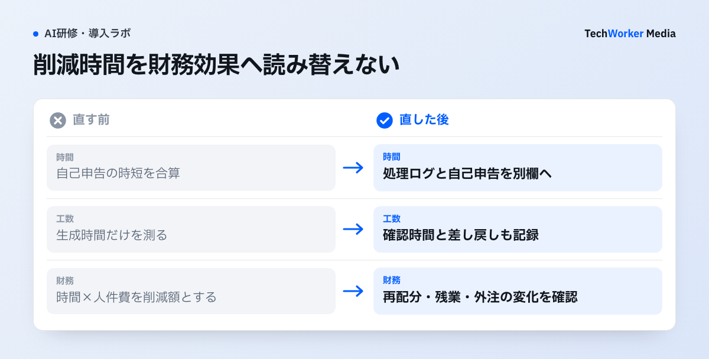

Microsoft 365 CopilotのROIは、何をどう測ればよいですか？
導入、利用、行動変化、業務成果、財務効果の5層に分け、途中の指標だけで成功と判定しません。
Copilotを導入すると、最初に見やすいのは、ライセンス数、利用者数（active users）、利用アプリです。しかし、利用者が増えただけでは、投資効果を説明できません。
使う回数が増えても、会議が減らないことがあります。資料作成の手戻りが増えることもあります。確認工数が別部門へ移るなら、業務成果は改善していない可能性があります。
そこで、次の5層に分けます。
- 導入：対象者とライセンス、前提の準備。
- 利用：誰が、どのアプリで使ったか。
- 行動変化：どの業務で、行動が変わったか。
- 業務成果：時間、品質、手戻りがどう変わったか。
- 財務効果：空いた時間が、何に使われたか。
継続・拡大・停止を判断できる指標を、部門ごとに置きます。
ROI測定は、どんな手順で設計しますか？
対象業務ごとに、課題、導入前の基準値、指標、継続条件、研修で扱う内容の5つを順に決めます。

提案書の記録票には、初稿時間、確認時間、差し戻し、再配分した仕事、ライセンス・研修・運用の費用を別欄で残します。自己申告の削減時間と処理ログは混ぜません。財務効果が未確認なら、その欄は未確認のまま報告します。
手順1 解決したい業務課題と対象者を決める
対象業務ごとに、解決したい業務課題と、対象者・対象作業を決めます。
手順2 導入前に基準値を作る
導入前に、対象業務の処理時間、件数、品質、手戻りを2〜4週間測ります。
全社一斉導入で比較が難しい場合は、業務や部門を段階的に展開します。同期間の非対象群と比較します。
手順3 利用指標と成果指標を置く
Microsoft 365管理センターのCopilot usage reportでは、次を確認できます。
- 対象者数（enabled users）
- 利用者数（active users）
- 利用率（active users rate）
- アプリ別利用
2026年9月3日に確認した公式説明です。特定日の活動レポートは、その日がUTCで終了してから、通常48時間以内に利用可能になります。前日の数字だけで評価せず、7日・28日・90日・180日の期間をそろえて比較します。
成果指標は、業務ごとに1つか2つへ絞ります。悪化を検知する指標も、対にして置きます。
- 提案書：初稿までの時間、差し戻し回数、受注率。
- 会議：議事録作成時間、決定事項の未実施率。
- 問い合わせ：一次回答時間、再問い合わせ率、エスカレーション率。
- 開発：変更のリードタイム、レビュー修正回数、障害率。
時間短縮だけでなく、品質とリスクを対にして見ます。
手順4 30日後・90日後の継続条件を決める
継続・拡大・停止を判断できるよう、30日後・90日後の継続条件を先に決めます。ライセンス費用以外の研修・運用費も含めます。効果が再現しない場合に、展開を止める条件も決めておきます。
手順5 研修を測定設計へ接続する
研修では、対象業務を1つ選びます。実データを模した演習、成果物の評価基準、翌週からの利用場面、管理者が見る指標まで決めます。
30日後に利用が弱ければ、追加研修の前に、対象業務、権限、テンプレート、管理者の期待を見直します。
MicrosoftのCopilot Control Systemは、次の3つを分けて見ます。readiness/adoption、productivity impact、business value/ROIです。Viva Insightsでは、組織固有の指標を組み合わせる考え方を示しています。公式ダッシュボードは測定の入口です。各社の受注、処理時間、品質、リスクまでは、自動で証明しません。
ROI測定がうまくいかない例には、どんなものがありますか？
利用率だけで判定する、削減時間を人件費とみなす、ベンダー事例を検証済みとみなす、が代表例です。
- 利用者数だけで判定する。利用者が増えても、業務成果が改善しているとは限りません。
- 前日の数字だけで評価する。レポートの反映には、通常48時間かかります。期間をそろえて比較します。
- 研修後の満足度だけで定着を判断する。満足度アンケートだけでは、定着を判断できません。
- 削減時間をそのまま人件費削減とみなす。空いた時間が別の価値ある業務へ再配分されたのかを確認します。残業や外注が減ったのか、処理量や売上が増えたのかも確認します。
- 単純な平均で因果を断定する。部門の繁忙期や経験差があります。
- 利用が高いのに成果が弱いまま、プロンプト研修を増やす。業務プロセスとレビュー工程を、再設計します。
海外事例の読み方にも、注意が要ります。Microsoftは2025年5月に、英国金融サービス企業Quilterの事例を公開しました。会議後の記録作成や文書の初稿作成にCopilotを利用し、段階的な展開と研修を進めています。
ただし、時間短縮の見込みや担当者の評価を含む、ベンダー公表事例です。第三者による因果効果の検証とは区別します。
自社では、同じ種類の業務を対象にします。作業時間だけでなく、修正回数、成果物の品質、確認者の負荷を、導入前後で記録します。利用者が自ら申告する削減時間は、実測した処理時間と別欄で保持します。対象人数と観測期間も併記します。
5層の指標は、それぞれ何を見ればよいですか？
層ごとに見るものが違います。上の層だけで成功と判定せず、業務成果と財務効果まで確認します。
| 層 | 見るもの | 注意点 |
|---|---|---|
| 1. 導入状態 | 対象者数、ライセンス付与数、前提アプリの利用状況、権限やデータ準備 | 未利用者が多い場合は、研修不足だけでなく、対象業務が定まっていない、必要データへアクセスできない、利用ルールが不明という可能性がある |
| 2. 利用状態 | enabled users、active users、active users rate、アプリ別利用 | 前日の数字だけで評価せず、7日・28日・90日・180日の期間をそろえる |
| 3. 行動変化 | 会議要約、メール下書き、資料作成、情報探索のどの業務で行動が変わったか | 頻度だけでなく、使った後のレビュー、修正、差し戻しも記録する |
| 4. 業務成果 | 業務ごとに1つか2つの成果指標 | 時間短縮は、品質とリスクを対にして見る |
| 5. 財務効果 | 空いた時間の再配分、残業や外注の減少、処理量や売上の増加 | 削減時間をそのまま人件費削減とみなさない |
出典：Microsoft公式ドキュメント（2026年9月3日確認）をもとにTechWorkerが整理。
よくある質問
導入、利用、行動変化、業務成果、財務効果の5層に分けて設計します。利用者が増えただけでは、投資効果を説明できません。途中の指標だけで成功判定せず、業務ごとに1つか2つの成果指標へ絞ります。
対象業務の処理時間、件数、品質、手戻りを2〜4週間測り、基準値を作ります。全社一斉導入で比較が難しい場合は、業務や部門を段階的に展開し、同期間の非対象群と比べます。
考えません。空いた時間が別の価値ある業務へ再配分されたのか、残業や外注が減ったのか、処理量や売上が増えたのかを確認します。時間短縮は品質とリスクを対にして見ます。
次の一歩は、何から始めればよいですか？
導入前の基準値、対象業務、研修、30日・90日の評価を、1つの計画にまとめます。
TechWorkerでは、導入前基準値、対象業務、研修、30日・90日の評価までを、1つの計画にします。利用率を報告するだけでなく、継続・拡大・停止を判断できる指標を、部門ごとに設計します。
定着課題の整理は、Microsoft Copilotが定着しない原因と対策を参照してください。
業務成果へつなぐ設計は、Microsoft Copilot×業務プロセス改革も参照してください。
出典と確認範囲
確認日：2026年9月3日。製品仕様・制度は更新されるため、導入時はリンク先の最新版を再確認してください。海外の制度・職業規範は日本へ直接適用せず、相違点と限界を本文に明記しています。